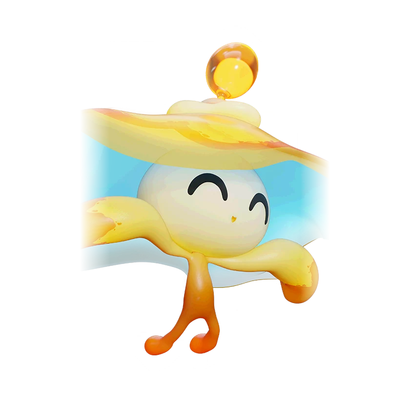

รายชื่อ Aniimo › #077

หลอดไฟจิ๋ว (Bulbly)
#077ธาตุสายฟ้าLuminSupportTier D
ปฏิกิริยาแรกต่อทุกสิ่งคือหนี ส่วนอวัยวะรูปกระเปาะบอกว่ามันแข็งแรงดีหรือไม่
ดูรายละเอียดเต็ม ร่างพิเศษ และร่างเปล่งประกายค่าสถานะพื้นฐาน
| HP | 83 |
|---|---|
| ATK | 68 |
| P.DEF | 63 |
| M.DEF | 63 |
| REGEN | 90 |
| BREAK | 37 |
สกิล
| โจมตีปกติ | ATK สายฟ้า ใช้พลังสายฟ้าโจมตีเป้าหมายจากระยะไกล |
| สกิล 1 | Swift Retreat สายฟ้า ถอยหลังอย่างรวดเร็ว ทิ้งร่างโคลนแมงกะพรุนที่ปล่อยคลื่นพลังสายฟ้าโจมตีเป้าหมาย และลดความเร็ว 15% เป็นเวลา 10 วินาที |
| สกิล 2 | Lightning Discharge สายฟ้า ยิงลำแสงพลังงาน กดปุ่มสกิลค้างเพื่อยิงต่อเนื่อง ทำดาเมจเป้าหมายในระยะ และฮีลเพื่อนธาตุสายฟ้าในระยะ 2% ของ HP ทุกวินาที |
สายวิวัฒนาการ
- หลอดไฟจิ๋ว → กระพรุนโคมลอย (Aniimo เลเวล 42)
จุดเกิด
- Tideblossom Coast Lv. 53–60
Held Item ที่แนะนำ
- Spirited Feather Aniimo ที่สวมใส่ได้ REGEN เพิ่ม 0.7 ต่อเลเวล
- Auspicious Bell เมื่อใช้สกิล มีโอกาส 20% ได้รับ 5 EP
งานใน Homeland
งานธาตุสายฟ้า Lv.1, งานช่าง Lv.1